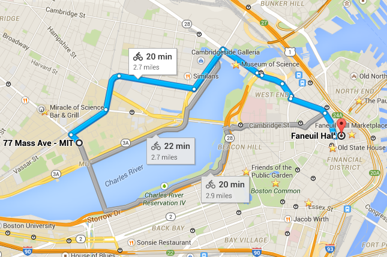

Red Road Trail
24.7 miles
easy
paved
nature
A leisurely, scenic route around the banks of the Oakerville River. Hear the croaking of the frogs as you ride.
A leisurely, scenic route around the banks of the Oakerville River. Hear the croaking of the frogs as you ride.